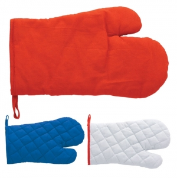

Tipos e variantes
Organização e decoração
Caixas de arrumação, pequenos organizadores e objetos decorativos diferem na relação com o espaço. Uma peça exposta precisa de ser legível e estável no local previsto; uma peça de arrumação deve permitir encontrar e retirar o conteúdo.
Aspetos que distinguem as opções: Base, dimensões, abertura e espaço ocupado com o conteúdo.
Contexto possível: Secretária, quarto, receção ou outras zonas interiores.
Têxteis para casa
Mantas, toalhas e acessórios têxteis são escolhidos pela dimensão em uso e pela forma de guardar. Uma manta dobrada pode mostrar uma zona diferente da que fica visível quando estendida.
Aspetos que distinguem as opções: Medidas abertas, volume guardado, textura e etiqueta de cuidados.
Contexto possível: Acolhimento, descanso e utilização doméstica.
Cozinha e pequenas tarefas
Pegas, panos e acessórios de preparação não devem ser confundidos com recipientes de refeição. No caso de uma pega destinada a contacto com calor, a aparência acolchoada não demonstra proteção térmica.
Aspetos que distinguem as opções: Pega, área de utilização, limpeza e instruções específicas.
Contexto possível: Preparação e arrumação; veja também o guia de bebidas e refeições.
Velas e elementos decorativos com chama
Distinga uma vela destinada a arder de um objeto apenas decorativo. O local de colocação faz parte da escolha: deve ser possível afastar materiais inflamáveis. ↗
Aspetos que distinguem as opções: Base, instruções de uso e distância a objetos próximos.
Contexto possível: Ambientes interiores onde seja possível cumprir as condições de utilização.
Acessórios de cuidado pessoal
Espelhos, escovas, pentes e bolsas de higiene acompanham rotinas diferentes. Observe se a pessoa precisa de ver, agarrar, abrir ou limpar o objeto com uma mão. Um acessório não deve ser apresentado como tratamento de saúde.
Aspetos que distinguem as opções: Abertura, pega, bordos, arrumação e limpeza das partes de contacto.
Contexto possível: Uso pessoal, viagens e organização de pequenos objetos.

Usos e contextos
- Escolha uma tarefa concreta e o local onde o objeto ficará. Um organizador para uso diário e um objeto decorativo exigem critérios diferentes.
- Em conjuntos, identifique cada peça: a bolsa não descreve o material, os cuidados ou a função do seu conteúdo.
O que comparar
- Meça a peça aberta e guardada; a fotografia pode mostrar apenas uma destas posições.
- Teste acesso e limpeza com o objeto no local previsto. Uma superfície decorativa recortada pode tornar a manutenção menos prática.
- Para contacto com alimentos, procure instruções próprias para esse uso. A Comissão Europeia inclui utensílios e louça no âmbito dos materiais de contacto alimentar. ↗
Materiais e componentes
São possibilidades a identificar no artigo escolhido. Confirme a composição de cada parte; os materiais de uma variante não descrevem toda a família.
Tecidos e enchimentos
fibras têxteis
Identifique exterior, forro e eventual enchimento separadamente.
Partes rígidas e pegas
plásticos
Observe uniões, peças desmontáveis e acabamento nas zonas de contacto.
Bases e recipientes decorativos
vidro · cerâmica
Estabilidade e integridade devem ser observadas no objeto completo, não deduzidas do material.
Zonas de personalização
- Face exterior ou painel têxtil: Escolha uma zona visível durante a utilização e acessível sem desmontagem indevida.
- Bolsa ou embalagem: A personalização exterior não deve ocultar instruções nem dificultar abertura.
Técnicas e condições
Possibilidades gerais para comparar. A aplicação depende do artigo, da superfície, do desenho e das condições do processo; não está confirmada para um artigo específico.
Serigrafia
Pode ser avaliada em painéis têxteis ou superfícies acessíveis, conforme tinta, acabamento e cuidados.
Bordado
Avalie espessura, acesso ao verso e posição de uso; uma manta com enchimento exige análise da construção.
Tampografia
Avalie objetos rígidos pela curvatura, suporte e aderência, mantendo livres as zonas de contacto relevantes.
Limitações e cuidados
- Não atribua proteção térmica a uma pega ou luva de cozinha com base na fotografia.
- Um acessório de cuidado pessoal não demonstra efeitos de saúde, higiene ou bem-estar por integrar esta família.
Antes de decidir
- Que tarefa e espaço vai servir?
- Como se abre e limpa?
- Que parte fica visível em uso?
Perguntas frequentes
Uma manta e a sua bolsa têm os mesmos cuidados?
Não necessariamente. Identifique os materiais e as instruções de cada parte.
Uma pega acolchoada protege de qualquer temperatura?
A fotografia e a espessura aparente não demonstram esse desempenho. Procure as instruções e os limites do artigo.
A decoração pode ser aplicada numa zona de contacto alimentar?
A zona e o processo precisam de avaliação específica para a utilização prevista; não generalize a adequação da face exterior ao interior.
Fontes e âmbito
As referências sustentam os factos identificados no texto. Os tipos, contextos e critérios de escolha são orientação editorial; as instruções de um fabricante aplicam-se ao seu próprio âmbito.
-
Segurança na utilização de velas
Governo do Reino Unido · Consulta:Orientação doméstica sobre chama e materiais inflamáveis; não é um ensaio nem instruções de uma vela específica.
-
Care Labelling Symbols
GINETEX · Consulta:Significado das instruções de cuidado; os símbolos não são reproduzidos.
-
Materiais em contacto com alimentos
Comissão Europeia · Consulta:Recipientes, utensílios e embalagens destinados a contacto alimentar. Enquadramento geral; não comprova a conformidade de qualquer artigo ilustrado.